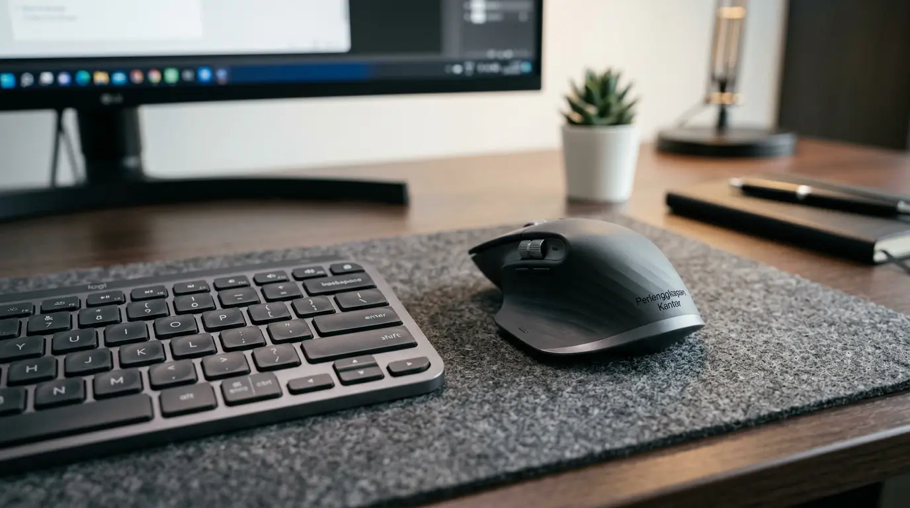

Investasi pada kombinasi perangkat mouse keyboard wireless ergonomis merupakan solusi mendasar untuk tingkatkan produktivitas serta menjaga kenyamanan fisik selama jam kerja panjang. Kerusakan otot akibat posisi mengetik yang tidak tepat dapat menghambat kinerja operasional harian. Penggunaan perangkat kerja berdesain ergonomis terbukti menekan risiko ketegangan pergelangan tangan (Repetitive Strain Injury) sekaligus menciptakan lingkungan kerja yang rapi bebas kabel. Memilih set nirkabel berkualitas tidak selalu menuntut anggaran besar, sebab kini tersedia berbagai lini produk yang memadukan spesifikasi teknis tinggi, ketahanan baterai ekstra panjang, dan harga yang tetap bersahabat untuk pengadaan individu maupun tim operasional kantor.
Mengapa Perangkat Kerja Ergonomis Penting untuk Ruang Kerja Modern?
Penggunaan set mouse keyboard wireless ergonomis secara langsung berkontribusi pada kesehatan fisik jangka panjang dan efisiensi kerja para profesional di era kerja fleksibel saat ini. Berdasarkan Global Ergonomics Workplace Study 2025, penggunaan input device berdesain ergonomis menurunkan tingkat kelelahan otot pergelangan tangan hingga 42% pada pekerja kantor yang mengetik lebih dari 6 jam sehari. Selain itu, laporan Corporate Office Equipment Index 2025 mencatat bahwa 71% perusahaan yang beralih ke perangkat nirkabel ergonomis mengalami penurunan komplain terkait kelelahan fisik pegawai secara signifikan.
Mekanisme ketik yang responsif dan desain kontur yang pas di genggaman tangan memastikan posisi lengan tetap sejajar. Hal ini meminimalkan tekanan pada saraf karpal yang sering kali menjadi penyebab utama rasa nyeri otot. Melalui lini produk yang dikurasi oleh Perlengkapan Kantor, Anda bisa mendapatkan perangkat kerja berstandar tinggi yang mengombinasikan kenyamanan postural dan efisiensi operasional tanpa membebani anggaran.
Bagaimana Cara Memilih Keyboard Senyap dan Mouse Ergonomis yang Tepat?
Mengidentifikasi keunggulan rekomendasi keyboard senyap murah serta mouse ergonomis murah memerlukan ketelitian pada beberapa fitur teknis utama agar investasi alat kantor tetap berdaya guna tinggi:
- Profil Tombol dan Peredam Suara: Pilih keyboard dengan mekanisme scissor-switch atau membrane rubber dome berkualitas tinggi yang dilengkapi peredam bising (silent switch). Tombol ini memberikan umpan balik taktil yang lembut tanpa memicu suara ketukan yang keras.
- Sensitivitas dan Kontur Mouse: Pilih mouse yang memiliki bentuk sudut melengkung mengikuti telapak tangan (vertical atau contoured grip) serta resolusi sensor optik yang dapat disesuaikan (800–1600 DPI) agar navigasi kursor berjalan presisi di berbagai permukaan meja.
- Ketahanan Daya dan Otomatisasi Hemat Energi: Pastikan perangkat dilengkapi fitur Auto-Sleep Mode yang secara otomatis menonaktifkan daya saat tidak digunakan, sehingga masa pakai baterai dapat bertahan hingga 12–18 bulan.
- Konektivitas Nirkabel yang Stabil: Kehadiran pemancar nirkabel 2.4GHz berjangkauan hingga 10 meter menjamin koneksi bebas lag tanpa hambatan delay input.

Penggunaan rekomendasi keyboard senyap murah dan mouse ergonomis murah di meja kerja mendukung suasana kerja yang tenang dan nyaman.
Mengapa Kombinasi Nirkabel Lebih Unggul Dibanding Perangkat Konvensional?
Menghubungkan mouse dan keyboard secara nirkabel memberikan kebebasan tata letak meja kerja (desk setup) yang lebih bersih, rapi, dan mudah dipindahkan sesuai kebutuhan interaksi tim.
Keterbatasan kabel sering kali membatasi jarak pandang ideal mata ke monitor dan memaksa posisi duduk menjadi membongkok. Dengan konfigurasi nirkabel, pengguna bebas mengatur jarak keyboard dan mouse guna memperoleh postur duduk yang paling ergonomis. Di samping itu, portabilitas perangkat nirkabel sangat mempermudah mobilitas bagi pekerja yang sering berpindah antar-ruang rapat maupun bekerja dari rumah (remote work).
Optimalkan kenyamanan ruang kerja Anda sekarang juga. Beli Paket WFH Hemat dari Perlengkapan Kantor dan rasakan peningkatan efisiensi kerja harian secara signifikan!
Tabel Spesifikasi dan Fitur Set Mouse Keyboard Nirkabel
Untuk memudahkan evaluasi teknis sebelum pembelian, berikut adalah tabel komparasi fitur utama pada lini produk bundel office technology unggulan:
| Fitur Utama | Tipe Basic Office Set | Tipe Ergonomic Silent Set | Tipe Pro Dual-Connect Set |
|---|---|---|---|
| Konektivitas | 2.4GHz USB Dongle | 2.4GHz USB Dongle | 2.4GHz + Dual Bluetooth 5.0 |
| Tingkat Kebisingan | Standar (45 dB) | Ultra-Silent (<25 dB) | Ultra-Silent (<20 dB) |
| Desain Mouse | Ambidextrous Standard | Contoured Right-Handed | Vertical Ergonomic Wrist-Rest |
| Resolusi DPI Mouse | 1000 DPI | 800 - 1600 DPI Adjustable | 1000 - 2400 DPI Adjustable |
| Masa Aktif Baterai | Hingga 6-8 Bulan | Hingga 12-15 Bulan | Hingga 18-24 Bulan (Rechargeable) |
| Kesesuaian Penggunaan | Penggunaan Umum | Staf Operasional & Admin | Eksekutif & Power User |
Apa Saja Kesalahan Umum Saat Membeli Perangkat Input Nirkabel?
Menghindari kekeliruan dalam proses pemilihan akan menyelamatkan Anda dari ketidaknyamanan operasional serta pengeluaran yang tidak perlu di kemudian hari:
- Mengabaikan Faktor Ukuran Telapak Tangan: Membeli mouse yang terlalu kecil (mini travel mouse) untuk penggunaan harian dapat menyebabkan jari kram dan ketegangan pada otot lengan.
- Melupakan Faktor Fitur Silent Click: Menggunakan keyboard mekanis standar yang bising di ruang kerja terbuka (open-plan office) sering kali mengganggu konsentrasi rekan kerja sekitar.
- Hanya Tergiur Harga Tanpa Garansi: Memilih produk non-brand tanpa dukungan garansi resmi meningkatkan risiko gangguan transmisi sinyal dan kerusakan sensor dalam jangka pendek.
- Atur ketinggian meja kerja secara dinamis di artikel cara mengatur standing desk.
- Temukan pilihan kursi penopang tubuh pada 10 kursi kantor ergonomis terbaik.
- Lihat penawaran bundel meja dan kursi pada paket hemat meja & kursi belajar kerja.
Solusi Pengadaan Perangkat Kerja Terbaik Bersama Perlengkapan Kantor
Sebagai penyedia terdepan dalam industri alat kantor dan office technology, Perlengkapan Kantor selalu berkomitmen menyajikan kurasi produk yang menggabungkan mutu material, keandalan fungsional, dan harga yang kompetitif. Setiap set nirkabel yang kami tawarkan telah melewati pengujian kualitas ketat untuk memastikan tingkat responsitivitas presisi dan durabilitas masa pakai yang panjang.
Kami siap melayani kebutuhan pengadaan berskala ritel maupun pemesanan jumlah besar (corporate procurement) untuk seluruh wilayah Indonesia. Tim spesialis kami akan memberikan konsultasi komprehensif guna memastikan kombinasi spesifikasi produk yang dipilih tepat sesuai dengan alokasi anggaran dan kebutuhan operasional perusahaan Anda.
Jangan biarkan kelelahan fisik menurunkan performa tim Anda. Beli Paket WFH Hemat hari ini untuk penawaran harga khusus dan garansi purna jual terjamin!
Pertanyaan Populer Seputar Mouse Keyboard Wireless (FAQ)
Kesimpulan Praktis
Memilih kombinasi mouse dan keyboard nirkabel yang tepat tidak hanya soal estetika meja kerja, melainkan langkah strategis dalam menjaga kesehatan postur tubuh dan produktivitas harian. Dengan fitur utama seperti desain kontur ergonomis, mekanisme tombol senyap, serta daya tahan baterai yang efisien, Anda dapat menikmati pengalaman mengetik yang nyaman tanpa menguras anggaran.
Percayakan seluruh kebutuhan perangkat teknologi dan peralatan kerja perusahaan Anda kepada penyedia resmi yang tepercaya. Siapkan ruang kerja yang nyaman dan efisien sekarang juga. Beli Paket WFH Hemat hanya di Perlengkapan Kantor!

Penulis: Tim Spesialis Perlengkapan Kantor
Divisi Home Office & Ergonomi di Perlengkapan Kantor. Berpengalaman dalam menyajikan panduan spesifikasi teknis, rekomendasi perangkat input nirkabel, dan kiat penataan meja kerja ergonomis untuk mendukung produktivitas tim operasional korporat.